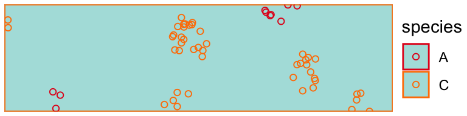
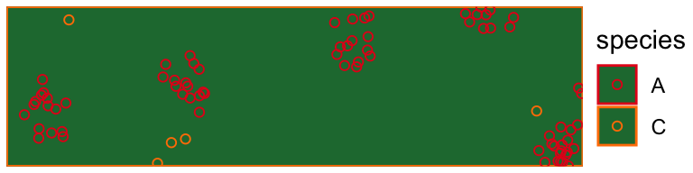
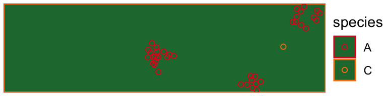

solidagos.Rmd#> Loading required package: ggplot2draw_study_area(example_study_area)
A species is a name, a list of aesthetics (for plotting), and a list of traits. traits are functions that take in properties of a spatial area and return a function of x and y which are passed to simulators for generating population units on a plane.
speciesA #> $name #> [1] "A" #> #> $aes #> $aes$color #> [1] "#e41a1c" #> #> #> $traits #> $traits$rarity #> function (properties) #> { #> L <- c(1, unlist(properties[property_map])) #> function(x, y) { #> val <- drop(t(L) %*% kappa) #> rep(val, length(x)) #> } #> } #> <bytecode: 0x7f9d80fe8a50> #> <environment: 0x7f9d80fe9a48> #> #> $traits$clumping #> function (properties) #> { #> L <- c(1, unlist(properties[property_map])) #> function(x, y) { #> val <- drop(t(L) %*% mu) #> rep(val, length(x)) #> } #> } #> <bytecode: 0x7f9d80fea4d8> #> <environment: 0x7f9d80feb4d0>
study_species <- list( speciesA, speciesB, speciesC )
pop <- purrr::map( .x = example_study_area, .f = ~ generate_matern_populations( species_list = study_species, area = .x, scale = .05) )
draw_populations(pop[[20]])

draw_populations(pop[[450]])

draw_populations(pop[[900]])

The study will evaluate a two stage sampling design of roadsides. At the first stage, road segments are sampled from a network. At the second stage, simulated observers will follow a protocol to measure populations within each sampled segment. Observers use a probabalistic dectector function to take samples within a segment. Different detector functions determines with what probability an observer detects population units and how observers take samples. For example, the oracle observer (a.k.a the Weakley observer) observes all population units. An observer using the half-Normal detector walks the length of a segment and observes units with a decaying probability the further away from the road edge. Below we describe the observer and detector functions used in the study and give an example of each.
First, we describe three additional concepts in our simulation: species,
The first
first-stage sampling
second-stage sampling
detectors and observers
network https://www.r-spatial.org/r/2019/09/26/spatial-networks.html
populations